Thursday · Literature
The (c. 1955–1965): on trial and the circuit
From the in San Francisco (7 October 1955) through the (1957) and the late-1950s publication fights around and , a loose network of poets and novelists made nonconformist speech a public literary event. “” is a later teaching label for mid-1950s to early-1960s books, readings, and courtrooms — not a synonym for the 1967+ counterculture.
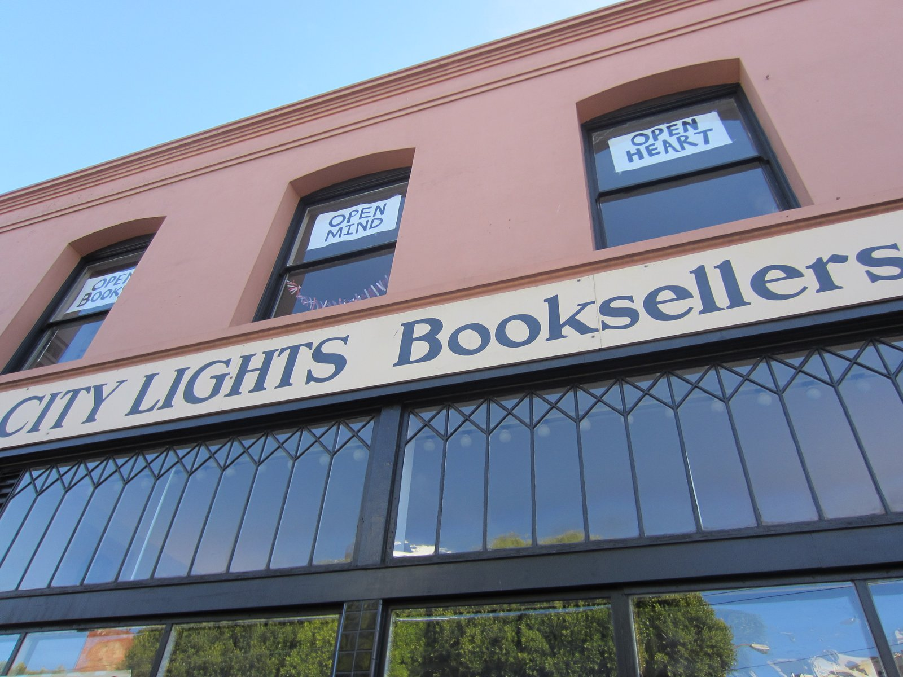
_-_1.JPG){kind=link}
“” is a period and teaching label that hardened after the fact. and others used “” earlier in the late 1940s as slang for exhausted and beatific; the magazine and newspaper packaging of a “generation” arrives mainly in the mid-to-late 1950s, after public readings and bestseller publicity. This capsule’s core window runs from the (7 October 1955) and ’s (1956) through the (1957), the U.S. success of (1957), the Paris publication and later U.S. fights over ’s (1959), and the early-1960s consolidation of as a recognizable brand — roughly into the mid-1960s. It is not only the Kerouac myth of cross-country cars and jazz nights, and it is not the same thing as the counterculture that mass media associated with 1967 and after. Women writers (, , later and others) and the around sit inside or beside the same years; reducing the scene to three male novelists misreads the reading rooms. is an earlier Capsules literature lesson whose calendar overlaps the 1940s–50s; it names different books (Sartre, Camus, Beauvoir) and different publics. The capsule is thematically adjacent only as another U.S. literary boom later periodized by critics — not as a shared cast or magazine system.
Select any words, or tap a dotted term.
- 1943–50 Columbia circle , , and connect through and New York apartments; , , and enter the same orbit. ’s essay “This Is the ” (New York Times Magazine, 16 November 1952) and his novel (1952) help coin the phrase in print before the famous San Francisco readings.
- 1953–55 City Lights / Six Gallery opens in San Francisco (1953). On 7 October 1955, at the on , Ginsberg reads the first part of ; MCs; , , , and also read. The night becomes the usual origin story for the public poetry boom.
- 1956–57 Howl published and tried publishes (1956). U.S. Customs and then San Francisco police seize copies; Ferlinghetti and bookstore manager are charged. Judge ’s October 1957 decision finds not obscene — a landmark free-speech win for literary modernism in paperback.
- 1957 On the Road Viking publishes Kerouac’s . Gilbert Millstein’s New York Times review frames it as a generational novel; fame and caricature arrive together. The book’s fame often overshadows the poetry-trial story that made “” a newspaper word the same year.
- 1958–59 Paris Naked Lunch / U.S. fights ’s appears from in Paris (1959). U.S. publishers and courts later fight over its status; a Boston obscenity case is overturned on appeal in 1966. methods with intensify ’s difference from Kerouac’s spontaneous-prose myth.
- 1955–62 SF–NY–Mexico circuits Readings, small presses, and travel link , the Lower East Side, Denver, and Mexico City. Corso, Snyder, Cassady, di Prima, and others circulate poems, letters, and reputations beside the three most marketed names.
- 1960–65 Brand and edge becomes a sellable style in magazines and tourism even as the writers diverge — Ginsberg toward public activism, Kerouac toward conservative Catholic nostalgia and alcoholism, toward expatriate experiment. By the mid-1960s the label overlaps a newer youth culture it did not invent.
- 1966–69 After-edges ’s U.S. legal clearance (1966); Kerouac dies in 1969. , rock festivals, and later academic syllabi absorb and rewrite memory — treated in After, not as this lesson’s core.
Before
Postwar conformity, paperbacks, and the Columbia circle
Postwar United States culture in the late 1940s and early 1950s rewarded conformity in visible ways: suburban housing tracts, white-collar dress codes, Cold War loyalty rituals, and a growing mass-media script of the nuclear family. That script was never the whole country. The same years saw the put cheap books on drugstore racks, campuses filled with veterans and new students, and criminal law that still harshly targeted queer life and drug use. Literary rebellion did not appear from nowhere; it appeared where apartments, campuses, and bars already concentrated readers who disliked the official script.
{kind=link}
The early network was small and New York–centered. Ginsberg, Kerouac, and connected through Columbia and downtown apartments in the mid-1940s, with Carr as a social hinge and with Huncke bringing Times Square slang — including “” — into the talk. Holmes’s novel (1952) and his New York Times Magazine essay “This Is the ” (16 November 1952) put the phrase into mainstream print years before was a pamphlet. Cassady’s letters and cross-country driving supplied Kerouac with a living model for the Dean Moriarty energy later sold as . None of this was yet a national “movement.” It was a correspondence circle with criminal-adjacent edges, queer desire under legal threat, and a shared appetite for Spengler, jazz, and French modernism.
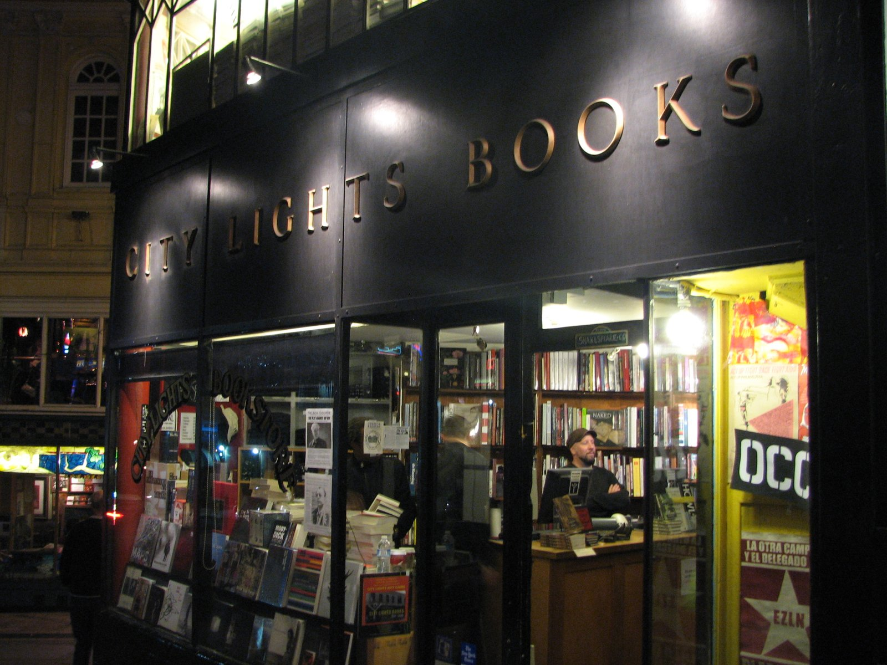
.jpg){kind=link}
San Francisco’s offered a second map. Ferlinghetti and Martin opened in 1953 as a paperback bookstore that became a publisher. Across the Bay Area, Rexroth and other poets had already been running readings and translations. When Ginsberg moved west, he stepped into an existing poetry infrastructure, not an empty stage. The “before” of , then, is double: a Columbia friendship plot in New York and a Bay Area reading culture ready to host a scandalous long poem.
The era
Six Gallery to Howl on trial, 1955–1965
On 7 October 1955, at the on in San Francisco, Ginsberg read the first part of to a crowded room. Rexroth was master of ceremonies. Lamantia, McClure, Whalen, and Snyder also read. Kerouac collected money for wine and cheered. The night is the usual public origin story because it turned private manuscript energy into a collective event with witnesses — and because Ferlinghetti, in the audience, soon offered to publish the poem.
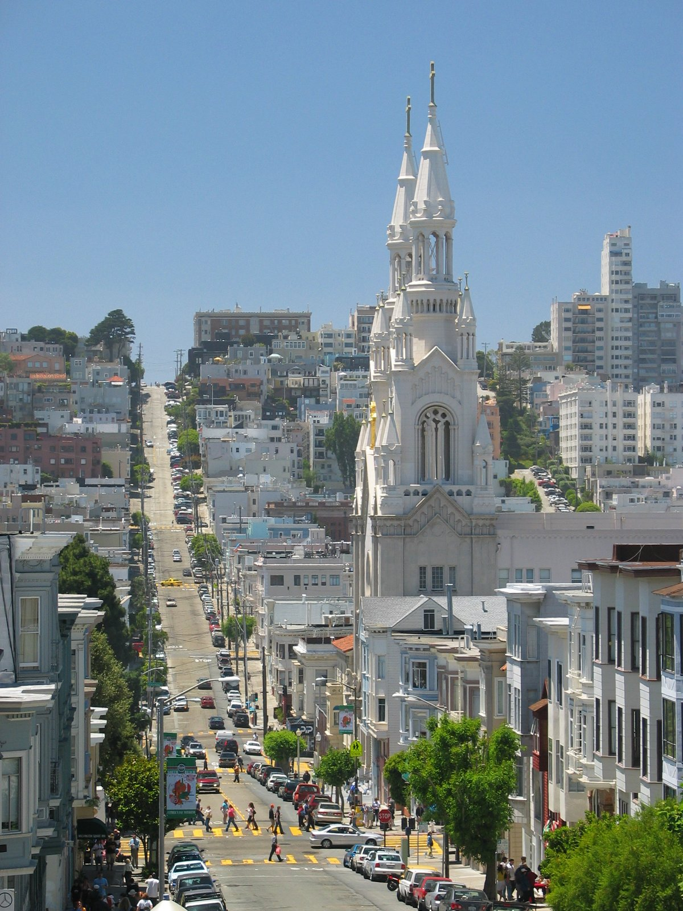
{kind=link}
issued in 1956 as Number Four in the . The book is short, cheap, and designed to be carried. U.S. Customs seized imported copies; in 1957 San Francisco police arrested Ferlinghetti and manager for selling it. The obscenity trial that followed — critics and professors on the stand, Judge ’s 3 October 1957 ruling that was not obscene — made the poem national news. Literary modernism’s long fight with U.S. obscenity law gained a paperback-sized victory in a municipal courtroom.
{kind=link}
The same year as Horn’s decision, Viking published Kerouac’s (1957). Millstein’s New York Times review treated it as the novel of a generation. Sales and parody arrived together: the “beatnik” caricature in newspapers and on television often flattened poetry, Buddhism, and queer life into goatees and bongos. Kerouac’s earlier scroll draft and Cassady letters became a myth of pure speed; in practice the published book had a longer editorial history. Still, 1957 yoked trial publicity and novel publicity into one media word: .
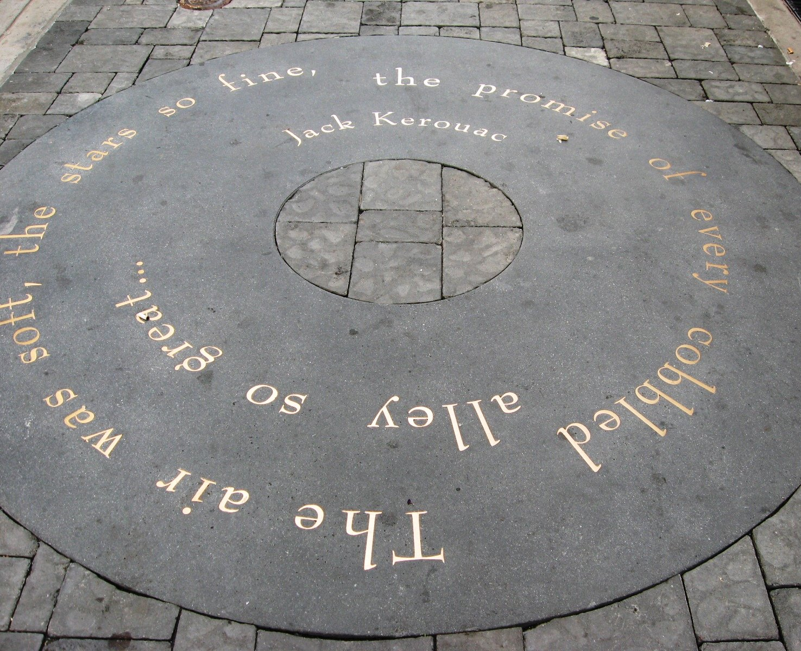
{kind=link}
’s path was expatriate and legally harder. appeared from in Paris in 1959 after years of notebooks and addiction narrative ( had already appeared as a 1953 Ace paperback under the name William Lee). U.S. publication fights continued into the mid-1960s; a Massachusetts case ended with appellate clearance in 1966. With Gysin in Paris, developed methods that refuse the Kerouac brand of sincere road confession. The “era” is therefore not one style: prophetic long-line poetry (), road novel celebrity (), and nightmare satire () share a decade and a friend network without sharing a single aesthetic program.
Circuits mattered as much as titles. Writers moved among , the Lower East Side, Denver, Mexico City, and the Paris hotel on rue Gît-le-Cœur later nicknamed the . Snyder’s East Asian study and mountain practice pulled the toward Buddhism and ecology. Corso’s Gasoline (1958) and Ferlinghetti’s (1958) widened the poetry paperback audience. Di Prima and (later ) ran from New York. The marketed trio of Ginsberg–Kerouac– sits inside a thicker field of readings, mimeographs, and travel.
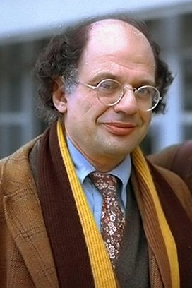
{kind=link}
How it showed up
Poems, novels, a bookstore — and four to read slowly
On the page and in courtrooms the years look like several methods at once: Ginsberg’s long breath-line prophecy, Kerouac’s marketed , ’s and junk satire, Ferlinghetti’s publisher-poet civic voice, and di Prima’s feminist and magical counter-archive. Deepen four figures and name the crowded room around them so “generation” does not collapse into a three-man poster.
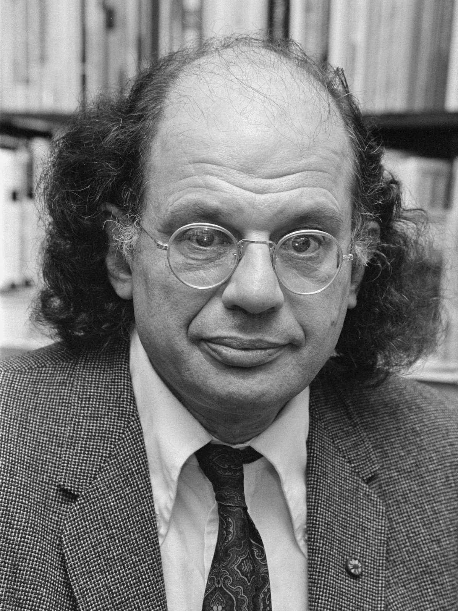
Allen Ginsberg
1926–1997
Poet of (1956) and (1961). reader; Columbia origins; later a tireless public performer. ’s section and catalogue of destroyed minds made private damage into civic speech.
signing books in Amsterdam’s Athenaeum bookstore, 24 November 1979 (Hans van Dijk / Anefo). Later than ’s first decade; the face of the poet who read at and whose book went to trial.Hans van Dijk for Anefo / Dutch National Archives / Wikimedia Commons / CC0
{kind=link}
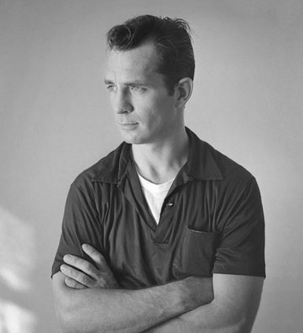
Jack Kerouac
1922–1969
(1957), (1958), and a large unpublished-in-life archive. Fame, alcoholism, and a late conservative turn complicate the freedom poster made from his name.
, photograph by Tom Palumbo. Author of (1957); the face most often used to sell “” as a novel brand rather than a poetry-trial story.Tom Palumbo / Wikimedia Commons / CC BY-SA 2.0
{kind=link}
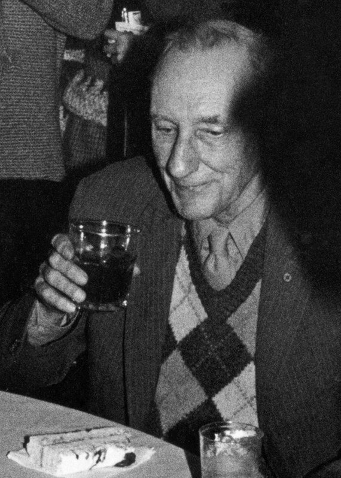
William S. Burroughs
1914–1997
(1953); (1959); cut-ups with . Expatriate Paris and Tangier years; U.S. obscenity fights into 1966. Least assimilable to the cheerful road-trip stereotype.
in 1983 (photograph by Larry Colen). Older than Ginsberg and Kerouac; (Paris, 1959) and practice made him the trio’s hardest legal and formal case.Larry Colen / Wikimedia Commons / CC BY-SA 2.0
{kind=link}
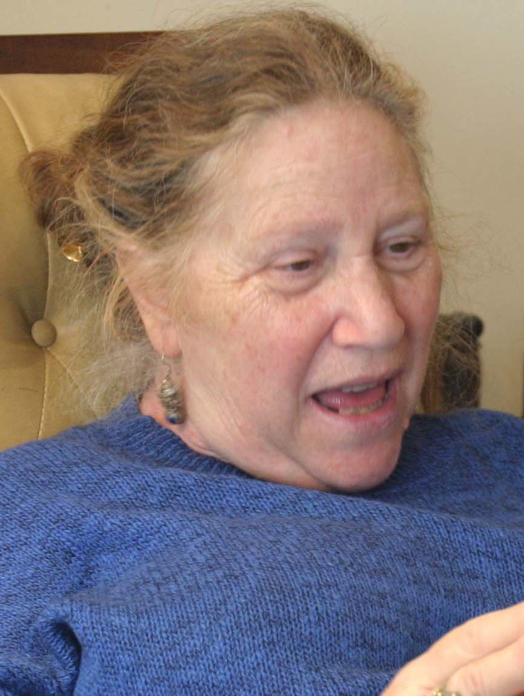
Diane di Prima
1934–2020
Poet and memoirist. ; (1969); . Reads the same years from kitchens, pregnancies, and political urgency the poster trio often erases.
, photographed by Gloria Graham. New York mimeograph culture, with /, and a lifelong insistence that was never only a male cast.Gloria Graham / Wikimedia Commons / CC BY-SA 3.0
.jpg){kind=link}
Ginsberg’s opens as a catalogue of “the best minds” destroyed by madness, institutions, and war-state culture, then turns in Part II to as industrial and bureaucratic devourer. Read it as a poem with sections and dedications (Carl Solomon), not only as a slogan. (1961) later grounds the prophetic voice in his mother Naomi’s mental illness and death. Listening to Ginsberg read — PennSound holds archival performances — shows how line length was also breath and timing for a room.
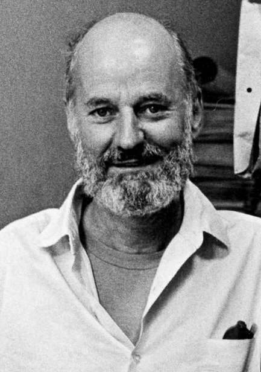
.jpg){kind=link}
Kerouac’s follows Sal Paradise and Dean Moriarty across the United States in a plot of cars, buses, jazz clubs, and crashed hospitality. The novel’s ethics are unsettled: freedom for young men often means unpaid labor and abandoned women in the background. (1958) shifts toward Snyder-like mountain and Buddhist scenes after fame hits. Treat “” as Kerouac’s theory-brand, then remember editors and multiple drafts existed anyway.
’s is episodic, satirical, and sexually explicit in ways that kept it in court. It is closer to satire and science-fictional nightmare than to Kerouac’s sentimental road narrative. remains the clearer addiction memoir. work with Gysin in Paris treats language as material to rearrange — a different answer to the problem of how to write modern shock.
Di Prima’s career refuses the footnote status older anthologies gave women Beats. With Jones she built as a fast mimeograph channel. plays with and against the sexed marketing of “beatnik.” carry oral urgency into explicit political address. Name also, without full essays here: Ferlinghetti as publisher-poet; Corso; Snyder; Cassady as muse and letter-writer; Holmes as early namer; Rexroth as MC; Kyger and later Waldman as expanding the roster; Baraka’s path from New York adjacency into Black Arts.
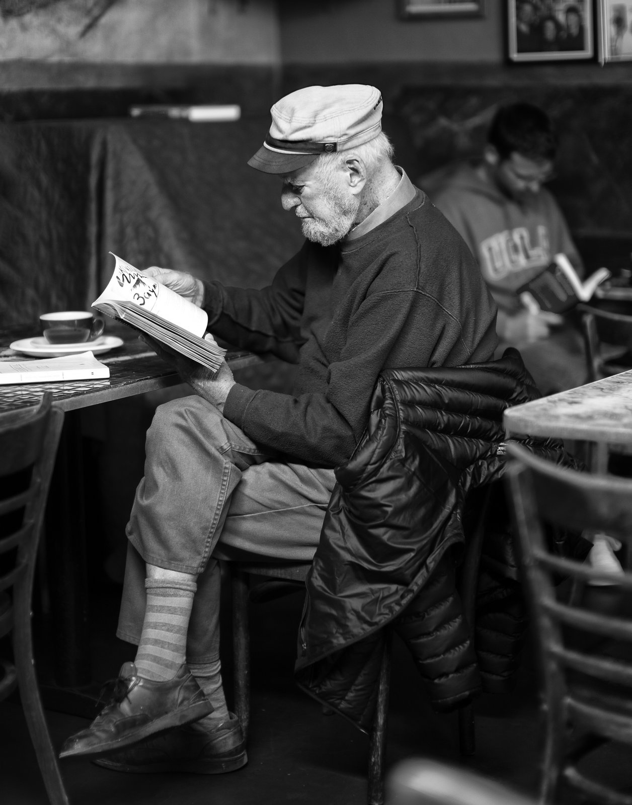
{kind=link}
Same time elsewhere
Angry Young Men, taiyōzoku, Paris rooms, Mexican routes
The mid-1950s did not belong only to . In Britain, the same years that produced and also produced the label around John Osborne’s (Royal Court Theatre, 1956) and novels of class anger and provincial constraint. such as Philip Larkin pursued a different, cooler English line. These are contemporaneous literary publics arguing about class, sex, and authority — not branches of American , and not obligated to match it term for term.
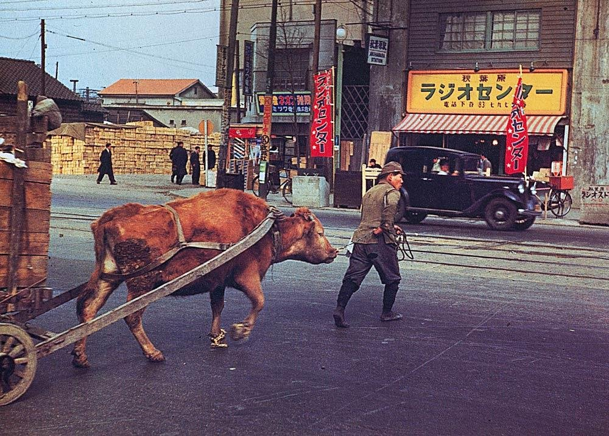
{kind=link}
In Japan, ’s (Taiyō no kisetsu, 1955) won the Akutagawa Prize and fed the (“”) boom in fiction and film — youth hedonism and generational break staged for a domestic mass audience. Separately, ’s early career begins in the late 1950s on a path toward politically serious postwar fiction that would later bring a Nobel Prize. Neither is “Japanese ”; both show that “youth generation” packaging was an international mid-century media habit with local books and censors.
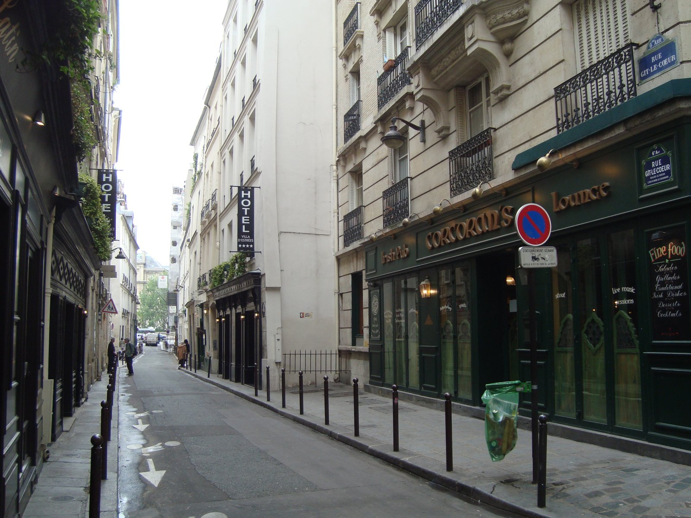
{kind=link}
Paris mattered as infrastructure. printed English books that U.S. publishers would not touch; the on rue Gît-le-Cœur concentrated expatriate writing and experiment. Francophone existentialist fame from the 1940s was still a tourist and student backdrop — Capsules’s lesson covers those books — but Ginsberg’s crowd was not Sartre’s café court. The useful link is geographic and legal (what could be printed where), not a shared philosophy syllabus.
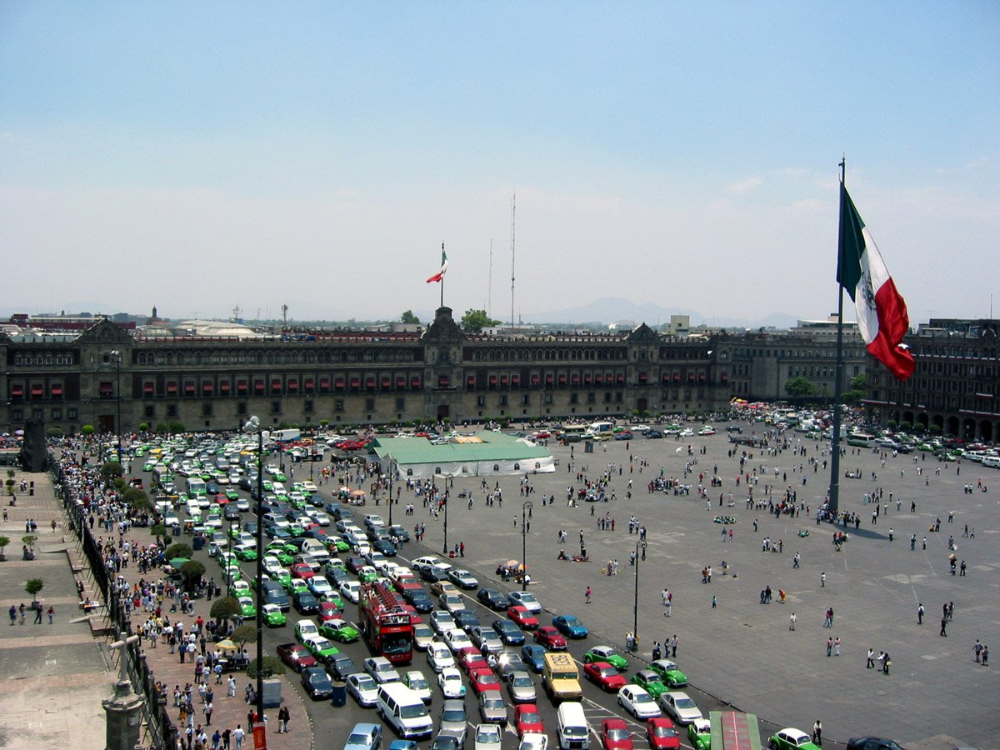
{kind=link}
Mexico City and other Latin American stops appear in Kerouac’s fiction and in ’s biography as places of cheaper living, drugs, and escape from U.S. surveillance — contact points with real streets, not a required pairing worksheet with the Latin American Boom (a later Capsules literature lesson with different authors and decades). Denver and the American West likewise function as Cassady country inside . Same-time elsewhere, for this capsule, means: British theatre and Movement poetry; Japanese and Ōe’s early career; Paris printing and hotels; Mexican routes on the itinerary.
After
Hippie absorption, canonization, Kerouac’s death
By the mid-1960s was already a brand that younger culture could quote, wear, and misremember. Ginsberg became a visible activist and chanting public figure; Cassady drove with Ken Kesey’s Merry Pranksters; rock lyrics borrowed the road and the visionary claim. The 1967 mass image is not the room, but marketers and tourists often collapsed them. Distinguishing 1955–65 literary from later counterculture is part of reading honestly.
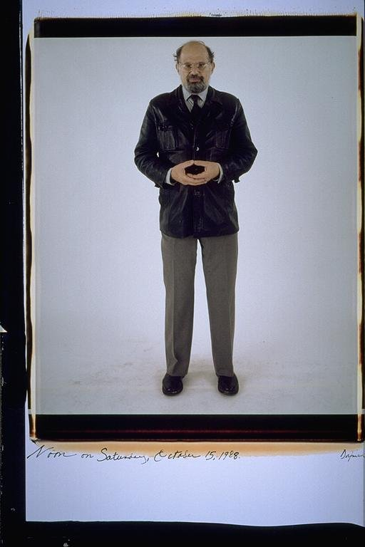
{kind=link}
Kerouac died on 21 October 1969 in St. Petersburg, Florida, after years of heavy drinking and a public turn against the left-wing youth who had claimed him. Academic canonization proceeded anyway: and entered syllabi; biographies and scroll facsimiles fed a scholarship industry. Queer and recovery readings later insisted on Ginsberg’s and ’s sexuality and on addiction as more than local color — and on di Prima, Kyger, and others as central, not decorative. ’s afterlife includes the 2010 film , endless anniversary readings, and continued citation in free-speech arguments. ’s 1966 U.S. legal clearance marks an After-edge of the obscenity story that began in the courtroom.
What remains teachable is concrete: a 1955 reading, a 1956 paperback, a 1957 trial and novel, a 1959 Paris book, a bookstore that still stands on Columbus Avenue. The label “” is useful when it points to those checkable events and to a wider cast than the male myth. It fails when it becomes a costume for any postwar nonconformity.
A question
A question to keep asking
If “” is a later media and classroom name, what changes when you center the and ’s Pocket Poets paperback — rather than only Kerouac’s road myth — and keep ’s New York mimeograph work in the same frame as Ginsberg, Kerouac, and ?
Fun fact
The Howl trial turned a seized paperback into a free-speech landmark
After published in 1956, U.S. Customs seized imported copies, and in 1957 San Francisco police arrested Ferlinghetti and bookstore manager Shigeyoshi “Shig” Murao for selling the book. The prosecution argued obscenity; the defense brought critics and professors to explain literary merit. On 3 October 1957, Judge ruled that was not obscene. The decision did not invent writing, but it made the poem a courtroom document as well as a paperback — and it advertised literature to a national audience that might never have attended the .